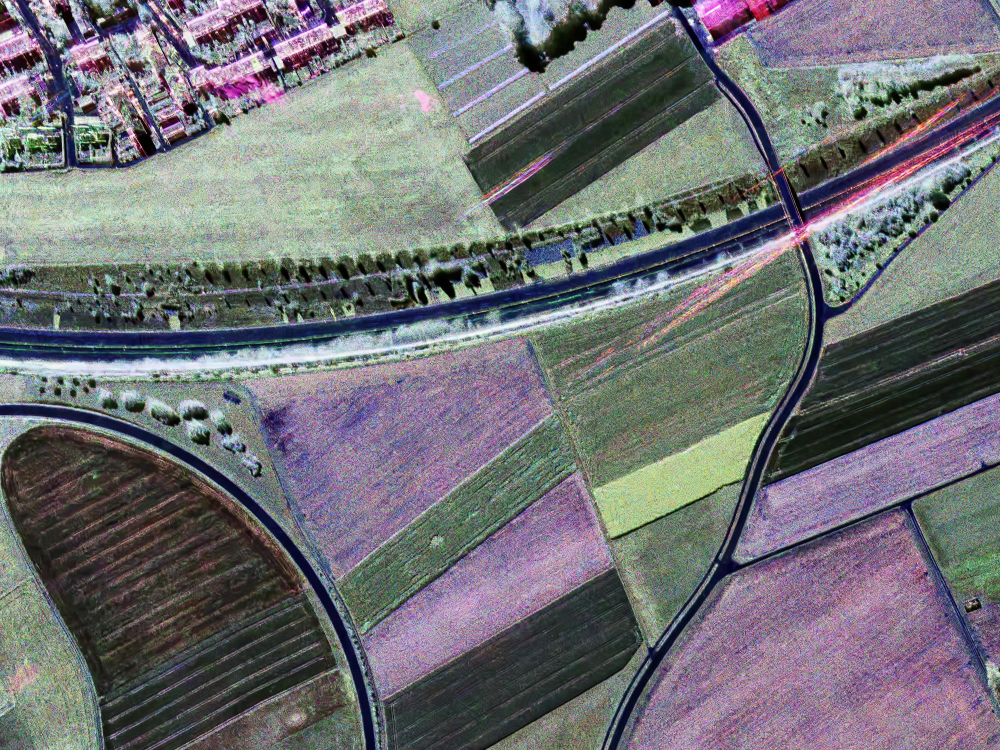
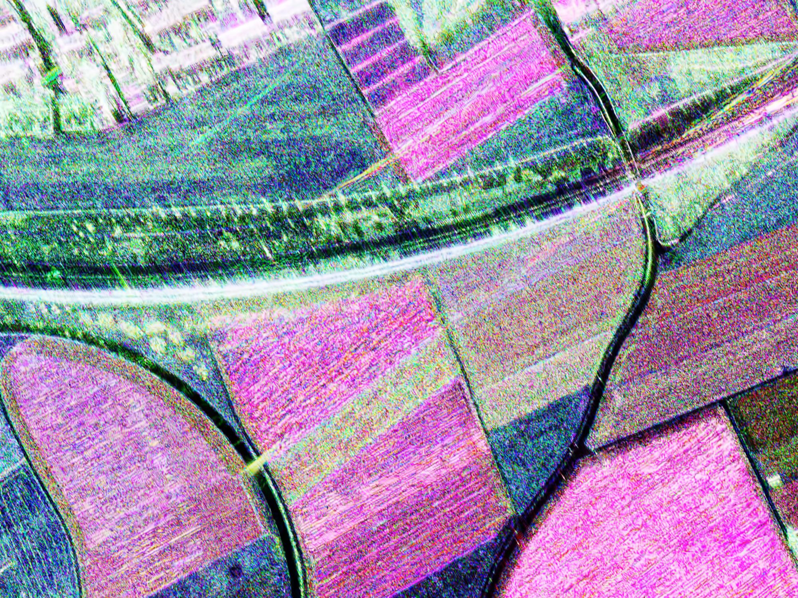
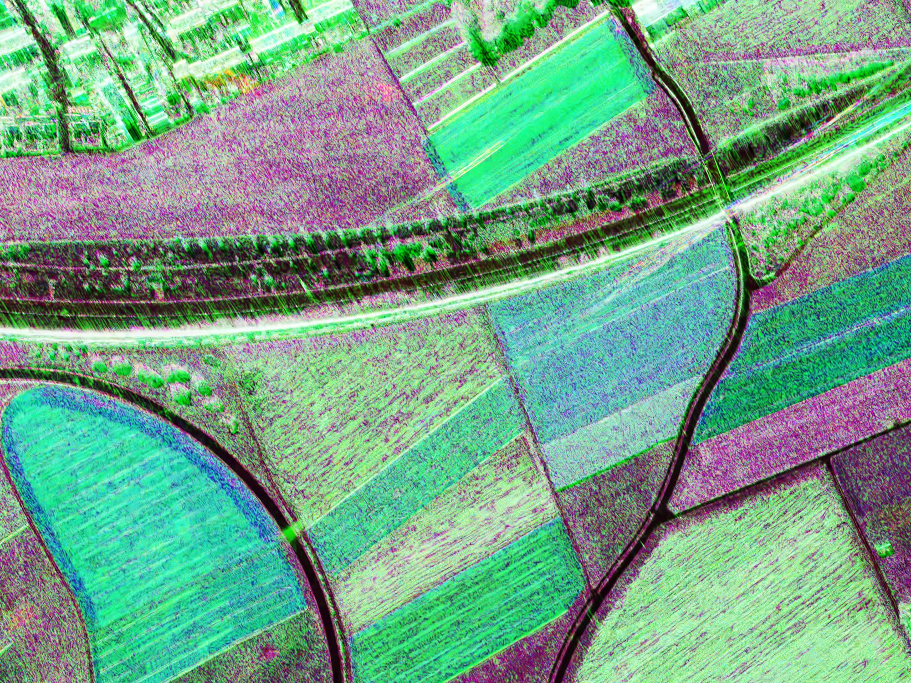
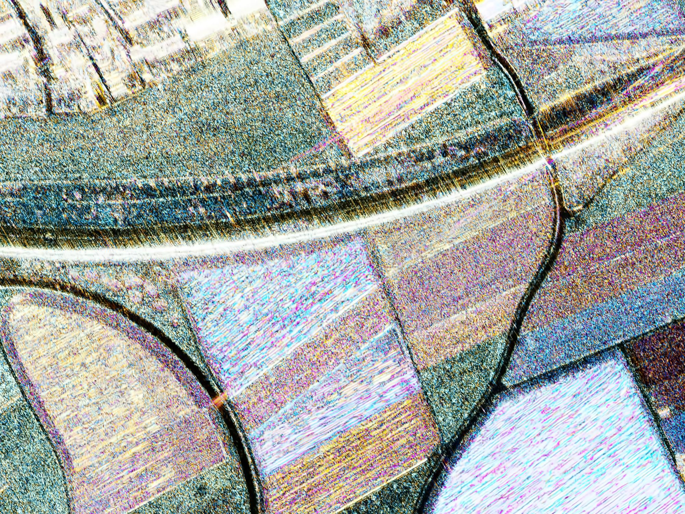
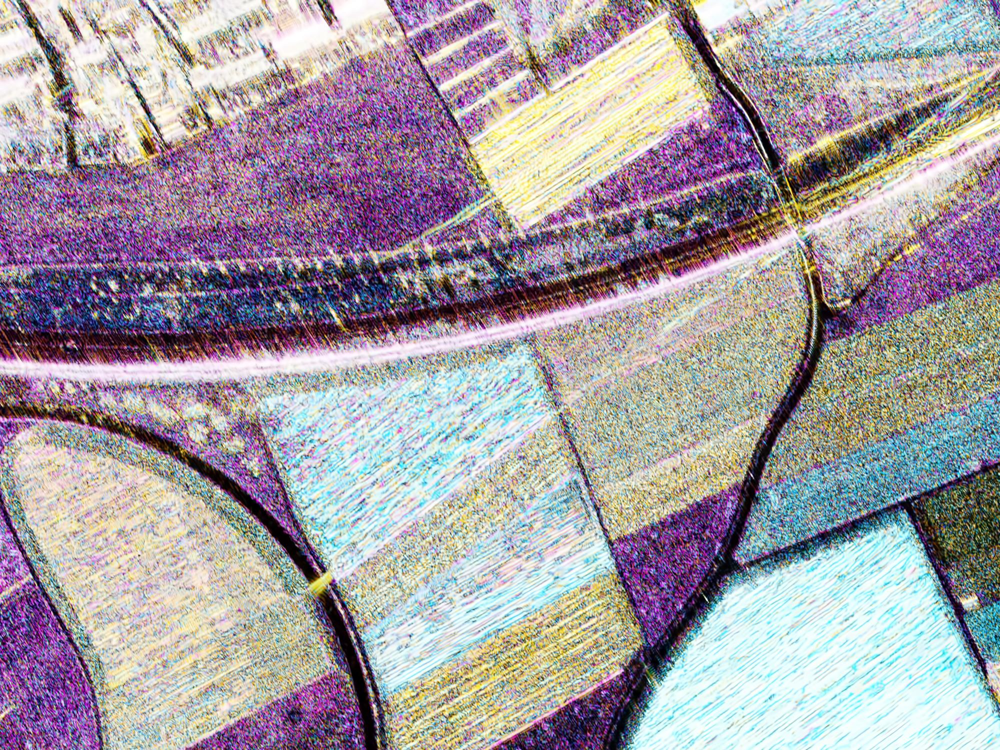
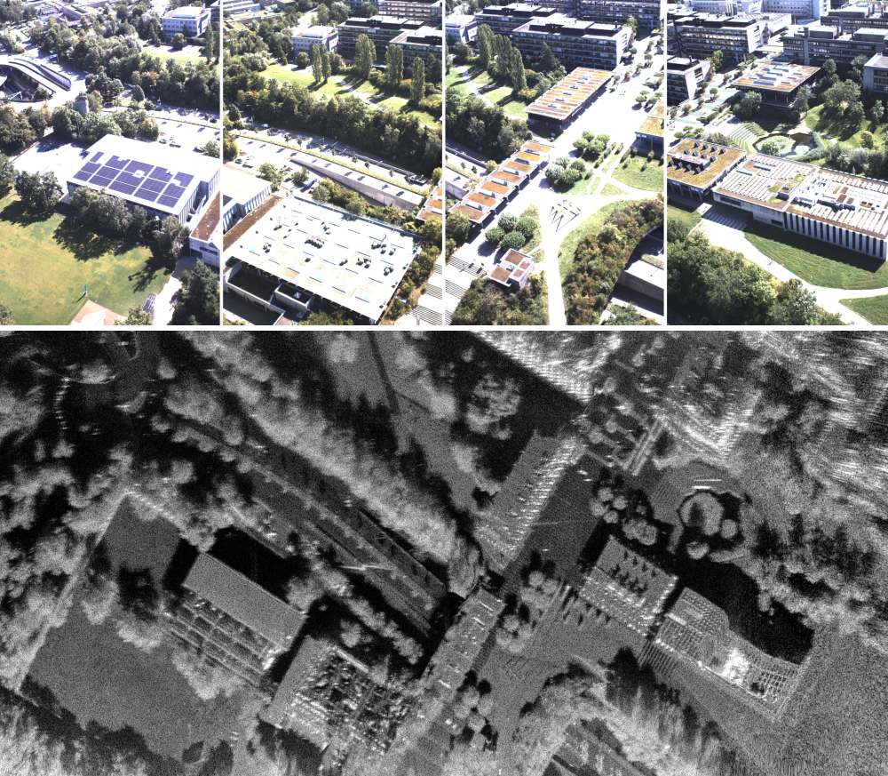
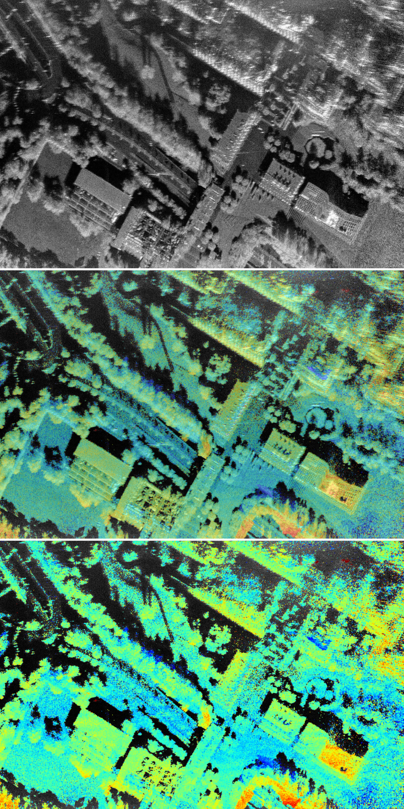
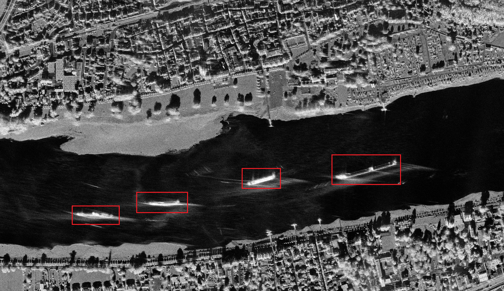
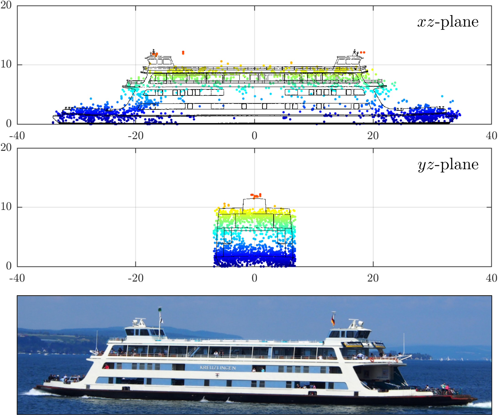
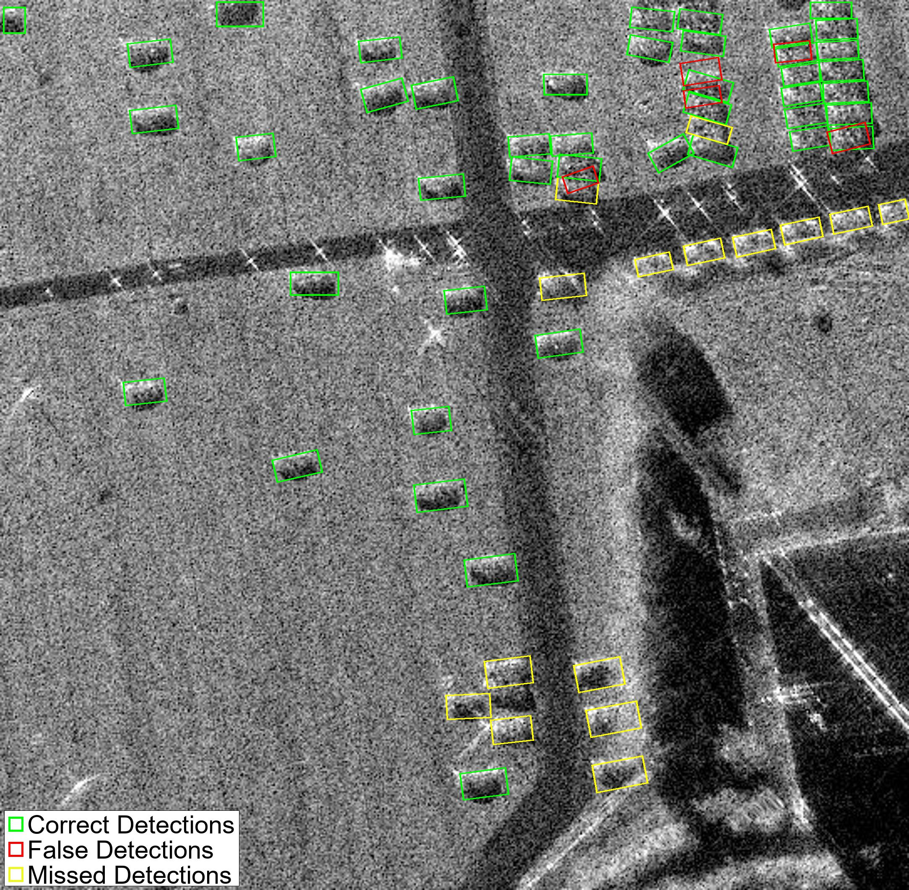

Aperture Dynamics pioneers next-generation Synthetic Aperture Radar technology. All-weather, day-night Earth observation for defense, environmental monitoring, and commercial applications.
Optical sensors cannot penetrate clouds, darkness, or adverse weather. Critical decisions require reliable data, regardless of conditions.
Optical satellites are blind through clouds and precipitation, creating dangerous data gaps during critical events like floods, storms, and natural disasters.
Traditional imaging stops at sunset. 50% of operational time is lost, and nighttime activities remain invisible to conventional sensors.
Military and security operations need persistent surveillance unaffected by camouflage, weather, or time of day.
Advanced synthetic aperture radar systems delivering unprecedented resolution and real-time capabilities.
Our proprietary SAR processing algorithms and hardware innovations enable high-resolution Earth observation in any weather, any time. From drone-mounted systems to satellite payloads, Aperture Dynamics technology delivers actionable intelligence when it matters most.
From sensor miniaturization to AI-powered analysis, Aperture Dynamics delivers cutting-edge radar technology across the entire processing chain.
QuadPol Technology: Utilizes HH, HV, VH, VV polarization combinations to distinguish between scattering mechanisms — even-bounce from flat surfaces, odd-bounce from vertical structures, and volume scattering from vegetation.
X-band: High-resolution surface detail | C-band: Balanced penetration | L-band: Deep subsurface imaging
SAR-GMTI: Advanced algorithms detect and track moving targets (vehicles, vessels) that appear blurred in standard SAR imagery. Motion compensation techniques refocus targets and derive 3D point clouds from multi-channel data.
AI-powered vehicle detection | Real-time tracking | 3D point cloud generation
Miniaturized Sensors: Optimal image quality from UAV-mounted SAR with precise focusing and navigation. The flexibility and maneuverability of drone SAR offer significant advantages over traditional airborne and satellite platforms.
Portable deployment | Low-altitude precision | Rapid response capability
Deep Learning: Trained neural networks for automatic object detection and classification in SAR imagery. From vehicle identification to vegetation analysis, our AI enhances surveillance and monitoring capabilities.
Vehicle detection | Change detection | Automated classification
3D Imaging: TomoSAR from multi-aspect acquisitions creates detailed three-dimensional reconstructions. Essential for complex urban environments and vertical structure analysis.
Multi-aspect fusion | 3D reconstruction | Urban mapping
Complete Pipeline: From SAR campaign planning through raw data focusing, calibration, validation, to value-adding products. Mission statement: Gaining knowledge through high quality SAR images and products.
Campaign planning | Raw data focusing | Calibration & validation
Aperture Dynamics technology serves diverse markets with tailored solutions
Border surveillance, change detection, and strategic monitoring with all-weather, day-night capability.
Rapid flood mapping, landslide assessment, and earthquake damage evaluation through any weather.
Millimeter-precision deformation tracking for bridges, dams, buildings, and critical infrastructure.
Forest monitoring, glacier tracking, vegetation analysis, and ecosystem health assessment.
Surface deformation monitoring, pipeline integrity, and resource exploration support.
Ship detection, oil spill monitoring, and coastal zone management.
Actual SAR data processed by Aperture Dynamics technology — showcasing multifrequency polarimetric composites, grayscale amplitude imagery, interferometry, and AI-powered analysis from DLR's F-SAR and drone-based sensors.

High-resolution surface detail with distinct scattering mechanisms: even-bounce (red), volume scattering (green), odd-bounce (blue).

Long-wavelength L-band penetrates vegetation canopy and soil, revealing subsurface features invisible to optical sensors.

RGB composite combining HH polarization across X-band (red), C-band (green), and L-band (blue) for comprehensive target analysis.

Multifrequency odd-bounce composite highlighting vertical structures and buildings across all frequency bands.

Even-bounce composite differentiating flat surfaces, water bodies, and ground planes with frequency-specific penetration.

Classic grayscale SAR amplitude image showing radar backscatter intensity. Typical black and white SAR imagery used for target detection and terrain analysis.

Interferometric SAR processing reveals millimeter-scale ground deformation. Color fringes represent phase differences between acquisitions.

SAR-GMTI processing detects and tracks moving vehicles. Advanced refocusing compensates for motion blur caused by target movement.

Deep learning model trained to automatically detect and classify vehicles in SAR imagery, enhancing surveillance capabilities.

Ground truth annotations overlaid on SAR data showing AI-detected vehicles with confidence scores and bounding boxes.
Decades of combined experience in radar remote sensing, signal processing, and Earth observation technology.
Received his M.Sc. in telecommunications engineering from the University of Vigo, Spain (2007) and PhD from UZH (2018). His dissertation focused on urban change detection using SAR. Joined the Joint Research Centre, Ispra, Italy (2008) and Thales Nederland B.V. under the FP7 Marie Curie Program (2009). With Aperture Dynamics since 2010, became Group Leader in 2023.
Holds a BSc and MSc (cum laude) in Telecommunications Engineering from the University of Pisa, Italy, and PhD from UZH. His research focused on indicating and imaging ground moving targets in SAR data, integrating SAR focusing, inverse SAR, across- and along-track interferometry.
Holds a BSc and MSc in Physics from ETH Zürich and a PhD from UZH. His master's thesis focused on integrated electro-optic standing wave Fourier-transform spectrometers in lithium niobate. His PhD centered on high-resolution SAR imaging using UAV platforms.
Received his BSc and MSc in Telecommunications Engineering from the University of Vigo, Spain, and PhD in Telematics Engineering from UC3M Madrid. Past research focused on dynamic resource allocation for post-5G/6G mobile networks, satellite integration, and small satellites (AMSAT) launched by SpaceX.
Peer-reviewed research demonstrating our technical leadership in SAR technology
Interested in our technology? Let's discuss how Aperture Dynamics can support your mission-critical applications.
Schedule a technical demonstration or discuss partnership opportunities. We're actively seeking strategic investors and commercial partners.
✉️ contact@sarlab.tech